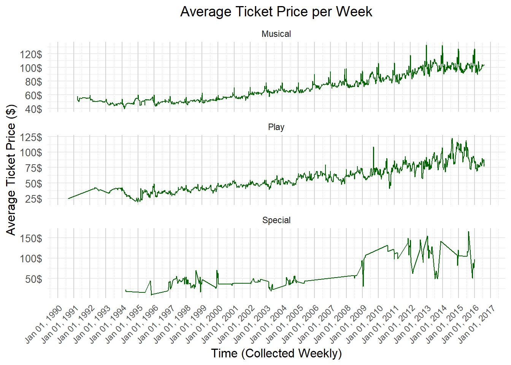

suppressMessages(library(tidyverse))suppressMessages(library(ggplot2))suppressMessages(library(knitr))suppressMessages(suppressWarnings(library(janitor)))suppressMessages(library(scales))suppressMessages(library(lubridate))BroadwayData <-read_csv("Raw_Data/broadway.csv", show_col_types =FALSE)#Cooper used different column names:work_broadway <-data.frame(BroadwayData)colnames(BroadwayData) <-c("Day", "Date", "Month","Year","Show_Name","Show_Theatre","Show_Type","Attendance","Capacity","Gross","Gross_Potential","Performances")
Before taking a look at the shows themselves, we wanted to get an idea of what theatres have historically made the most gross revenue, as we figured this information could inform our analysis later on.
Cleveland Dot plot of total gross outcomes for different Broadway theatres:
Code
total_theatre_data <- work_broadway |>group_by(Show.Theatre) |>summarise(Total.Gross =sum(Statistics.Gross, na.rm =TRUE)) |>arrange(desc(Total.Gross))# Create Cleveland dot plotggplot(total_theatre_data, aes(x = Total.Gross, y =reorder(Show.Theatre, Total.Gross))) +geom_point(size =2.5, color ="steelblue") +# The dotslabs(title ="Total Gross Earnings by Theatre from 1990 to 2016 (in 100s of Millions)",x ="Total Gross ($ in Hundred-Millions)",y ="Theatre Name") +scale_x_continuous(labels =label_number(scale =1e-8, accuracy =0.1),breaks =seq(0, max(total_theatre_data$Total.Gross) +100000000, by =1e8)) +theme_minimal() +theme(axis.text.y =element_text(size =5.6),axis.text.x =element_text(size =10))
So then, we decided to take a look at the shows’ gross revenue throughout their runs over time, and see which shows grossed the most from 1990 to 2016. And to connect this data to the graph above, we decided to color the points by the theatre that the shows began in. As we will see shortly, this was a naive approach to coloring, as it gives some information, but leaves out other info.
Cleveland Dot Plot of the top grossing Broadway shows from 1990 to 2016, colored by the theatre they started in.
Code
total_gross_data <- work_broadway |>group_by(Show.Name) |>summarise(Total.Gross =sum(Statistics.Gross, na.rm =TRUE),Show.Theatre =first(Show.Theatre)) |>arrange(desc(Total.Gross)) |>ungroup() |>slice_head(n =40)# Create Cleveland dot plot with color by Show.Theatreggplot(total_gross_data, aes(x = Total.Gross, y =reorder(Show.Name, Total.Gross), color = Show.Theatre)) +geom_point(size =3) +labs(title ="Top 40 Grossing Broadway Shows: 1990-2016",x ="Total Gross ($ in Hundred-Millions)",y ="Show Name") +scale_x_continuous(labels =label_number(scale =1e-8, accuracy =0.1),breaks =seq(0, max(total_gross_data$Total.Gross) +100000000, by =1e8)) +theme_minimal() +theme(axis.text.y =element_text(size =7), # Adjust the text size of show namesaxis.text.x =element_text(size =9), # Adjust the text size of x-axis labelsplot.margin =margin(10, 10, 10, 20), # Add some margin to prevent labels from being cut offplot.title =element_text(size =14, hjust =0.5)) +guides(color =guide_legend(title ="Initial Theatre",keywidth =0.5, # Shrink the width of the key (the colored box)keyheight =0.6,label.position ="right",ncol =1))
The graph above does give interesting insight into the top 40 highest grossing Broadway shows during the period the data set ranges from (1990 to 2016), with there being just a few shows that grossed 400 million dollars during the run, and the rest grossing less than that. However, something seemed fishy when looking at the gross amounts in conjuction with the theatres that we colored by.
The theatres represented above don’t seem to line-up with the top grossing theatres in the theatres-solo cleveland dot plot–for example, Lion King grossed over a billion dollars in its run up to 2016, and began in the New Amsterdam Theatre, but the New Amsterdam Theatre didn’t gross above a billion dollars in this same time frame. This fact lead me to consider why this is the case, and the only reasonable answer we could come up with is that these shows either had revivals at a different location (eg. ended one production in one theatre and began another in another), or transferred productions to a different location during its run (eg. one production from one theatre to another).
So, we added another column to the data set which essentially faceted the gross earnings of the shows by their theatres. We added the theatres as colors, and as part of the y labeles as we felt this, while technically redundant coloring, helped to read the graph a bit easier.
Cleveland Dot plot of total gross outcomes for different shows, separating by the different theatres they were in (as some shows could have moved location, or had revivals). (top 40):
Code
# Create a new column combining Show.Name and Show.Theatrework_broadway <- work_broadway |>mutate(ShowTheatreCombo =paste(Show.Name, " (", Show.Theatre, ")", sep =""))# Group by Show.Name and Show.Theatre, then summarize the total gross for each combinationshow_theatre_gross <- work_broadway |>group_by(ShowTheatreCombo, Show.Theatre) |>summarise(Total.Gross =sum(Statistics.Gross, na.rm =TRUE)) |>arrange(desc(Total.Gross)) |>ungroup() |>slice_head(n =40)
`summarise()` has grouped output by 'ShowTheatreCombo'. You can override using
the `.groups` argument.
Code
# Had to refactor because it was out of order when I incorporated the new columnshow_theatre_gross$ShowTheatreCombo <-factor(show_theatre_gross$ShowTheatreCombo, levels = show_theatre_gross$ShowTheatreCombo[order(show_theatre_gross$Total.Gross, decreasing =FALSE)])# Create Cleveland dot plotggplot(show_theatre_gross, aes(x = Total.Gross, y = ShowTheatreCombo, color = Show.Theatre)) +geom_point(size =2.5) +labs(title ="Top 40 Grossing Show/Theatre runs, 1990-2016",x ="Total Gross ($ in Hundred-Millions)",y ="Show Name") +scale_x_continuous(labels =label_number(scale =1e-8, accuracy =0.1),breaks =seq(0, max(show_theatre_gross$Total.Gross) +100000000, by =1e8)) +theme_minimal() +theme(axis.text.y =element_text(size =7),axis.text.x =element_text(size =9)) +guides(color =guide_legend(title ="Theatre",keywidth =0.5, # Shrink the width of the key (the colored box)keyheight =0.6,label.position ="right",ncol =1))
Now here we can see that some shows had sizeable stints in more than one venue (the Lion King, in particular), thus contributing to the inconsistencies in the last plot and the initial theatre gross plot. We also see a few theatres here that weren’t included in the original top 40 list, such as the August Wilson Theatre, where Jersey boys transferred to after previews elsewhere.
Moving onto the next portion of the data we wanted to explore, we decided to take a look at the relationship between attendance and gross revenue. We did this to ground ourselves in a relationship that we suspected was pretty easy to infer based off of common knowledge alone; however, as you will see, we had reason to explore this further after taking a look at the graph.
Linear relationship between weekly gross & weekly attendance?
Code
ggplot(work_broadway, aes(x = Statistics.Attendance, y = Statistics.Gross)) +geom_point(size =1, alpha =0.3) +geom_smooth(method ="lm", se =TRUE, color ="red", linetype ="solid") +# Linear regression linelabs(title ="Weekly Gross vs. Weekly Attendance",x ="Attendance (in thousands)",y ="Gross ($ in Millions)") +scale_y_continuous(labels =label_number(scale =1e-6, accuracy =0.1),breaks =seq(0, max(work_broadway$Statistics.Gross) +500000, by =5e5)) +scale_x_continuous(labels =label_number(scale =1e-3, accuracy =0.1),breaks =seq(0, max(work_broadway$Statistics.Attendance) +5000, by =2.5e3)) +theme_minimal() +theme(axis.text.x =element_text(size =10),axis.text.y =element_text(size =10),axis.title.x =element_text(size =12),axis.title.y =element_text(size =12),plot.title =element_text(size =14, hjust =0) )
`geom_smooth()` using formula = 'y ~ x'
Here, we see sort of what we would expect - there is a fairly reasonably linear correlation between weekly gross and weekly attendance. As more people attend, more tickets would be sold, and hence we would expect a higher grossing amount. However, we also see interesting data patterns in the gross vs attendance plot. Most notably to us are the vertical lines visible ad a few different places on the graph (ex. the 8.75k mark). We suspect these represent theatres with shows that consistently got to the point of selling out, thus inducing scarcity in their tickets, allowing the ticket prices to be more variable as demand increased or decreased. Thus, the attendance would remain near full, but the gross could increase (or decrease) due to increased demand for the limited tickets inducing ticket price increases.
We also considered the very real possibility of inflation’s effect on the ticket prices causing these vertical lines. For example, a show that was running throughout nearly the entirety of the time range of 1990 to 2016 (eg. the Phantom of the Opera) could see a real difference in ticket prices even if left at approximately constant demand due to the dollar in 1990 being worth more than the dollar in 2016, and the variations between.
With that all being said, we decided to further explore the linearity of the relationship to see how strong it is, just for fun.
Code
# Perform linear regressionlm_model <-lm(Statistics.Gross ~ Statistics.Attendance, data = work_broadway)# Show the summary of the linear regression modelsummary(lm_model)
Call:
lm(formula = Statistics.Gross ~ Statistics.Attendance, data = work_broadway)
Residuals:
Min 1Q Median 3Q Max
-709562 -136441 -17838 82082 1726908
Coefficients:
Estimate Std. Error t value Pr(>|t|)
(Intercept) -1.571e+05 3.589e+03 -43.78 <2e-16 ***
Statistics.Attendance 9.403e+01 4.163e-01 225.87 <2e-16 ***
---
Signif. codes: 0 '***' 0.001 '**' 0.01 '*' 0.05 '.' 0.1 ' ' 1
Residual standard error: 234900 on 31294 degrees of freedom
Multiple R-squared: 0.6198, Adjusted R-squared: 0.6198
F-statistic: 5.102e+04 on 1 and 31294 DF, p-value: < 2.2e-16
Here, we see that the relationship is very significant, with an incredibly small p value (likely due to the sheer size of the sample itself), and is of moderate strength, with R^2 value of just under 0.62.
Linearity detour aside, let’s take a look back at the vertical line phenomenon described before. We wanted to get a better insight into what types of shows would result in such gross variations at approximately constant attendance. So, we faceted the graph by show type.
The same as above, but faceted on show type:
Code
ggplot(work_broadway, aes(x = Statistics.Attendance, y = Statistics.Gross)) +geom_point(size =1, alpha =0.3) +geom_smooth(method ="lm", se =TRUE, color ="red", linetype ="solid") +# Linear regression linelabs(title ="Weekly Gross vs. Weekly Attendance by Show Type",x ="Attendance (in thousands)",y ="Gross ($ in Millions)") +scale_y_continuous(labels =label_number(scale =1e-6, accuracy =0.1),breaks =seq(0, max(work_broadway$Statistics.Gross) +500000, by =5e5)) +scale_x_continuous(labels =label_number(scale =1e-3, accuracy =0.1),breaks =seq(0, max(work_broadway$Statistics.Attendance) +5000, by =5e3)) +theme_minimal() +theme(axis.text.x =element_text(size =10),axis.text.y =element_text(size =10),axis.title.x =element_text(size =12),axis.title.y =element_text(size =12),plot.title =element_text(size =14, hjust =0) ) +facet_wrap(~ Show.Type, scales ="free")
`geom_smooth()` using formula = 'y ~ x'
As you can see, the phenomenon is still very strongly present for the musicals, whereas it is barely present for the plays, and imperceptible (if present at all) for the specials. This seems to make sense given the generally accepted idea that musicals, when successful, tend to have greater longevity and an easier time advertising themselves compared to successful plays. We also see that attendance seems limited somewhat for plays compared to Musicals and Specials, so the venues themselves are likely different for the different types of shows. However, this further got us thinking: what have the gross trends of musicals vs plays vs specials look like in aggregate over time? Do musicals really seem to make more on the whole?
So, we first took a look at the gross trends over time on Broadway in general to get our footing.
Code
work_broadway$Date.Full <-mdy(work_broadway$Date.Full)# Group by the Date.Full column (which already represents the start of each week)weekly_gross <- work_broadway |>group_by(Date.Full) |>summarise(Total.Gross =sum(Statistics.Gross, na.rm =TRUE)) |>ungroup()# Create the time series plotggplot(weekly_gross, aes(x = Date.Full, y = Total.Gross)) +geom_line(color ="blue") +# Line plot for total gross over timelabs(title ="Total Broadway Gross per Week",x ="Time (Collected Weekly)",y ="Total Gross amount ($ in Millions)") +scale_x_date(date_labels ="%b %d, %Y", date_breaks ="1 year") +# Format x-axis with readable date labelsscale_y_continuous(labels = scales::label_number(scale =1e-6)) +theme_minimal() +theme(axis.text.x =element_text(angle =45, hjust =1), # Rotate x-axis labels for readabilityaxis.text.y =element_text(size =10),axis.title.x =element_text(size =12),axis.title.y =element_text(size =12),plot.title =element_text(size =14, hjust =0.5),panel.grid.major.x =element_line(color ="lightgray", size =0.5),panel.grid.minor.x =element_line(color ="gray", linetype ="dotted", size =0.25) )
Warning: The `size` argument of `element_line()` is deprecated as of ggplot2 3.4.0.
ℹ Please use the `linewidth` argument instead.
Before exploring the question we set out to answer, let’s discuss the time series trends on the whole first. Here, we see pretty clear booms most years during the winter holidays, and bumps during the summertime and mid spring (potentially lining up with summer breaks and spring breaks for students, respecively?). We also see impacts of notable historic events in NYC on this chart, such as all Broadway theatres shutting down from September 11th to the 13th in 2001 due to the 9/11 terrorist attacks on the world trade center & a commensurate drop in gross revenue that week shown above (among other events).
But back to the question: have musicals, plays, or specials historically made more money on Broadway? To answer this, we again just faceted by show type, and plotted the same time series.
`summarise()` has grouped output by 'Date.Full'. You can override using the
`.groups` argument.
Code
# Create the time series plot and facet by Show.Typeggplot(weekly_gross_type, aes(x = Date.Full, y = Total.Gross)) +geom_line(color ="blue") +# Line plot for total gross over timelabs(title ="Total Broadway Gross per Week",x ="Time (Collected Weekly)",y ="Total Gross amount ($ in Millions)") +scale_x_date(date_labels ="%b %d, %Y", date_breaks ="1 year") +# Format x-axis with readable date labelsscale_y_continuous(labels = scales::label_number(scale =1e-6)) +# Scale y-axis to millionsfacet_wrap(~ Show.Type, scales ="free_y", ncol =1) +# Facet by Show.Typetheme_minimal() +theme(axis.text.x =element_text(angle =45, hjust =1), # Rotate x-axis labels for readabilityaxis.text.y =element_text(size =10),axis.title.x =element_text(size =12),axis.title.y =element_text(size =12),plot.title =element_text(size =14, hjust =0.5),panel.grid.major.x =element_line(color ="lightgray", size =0.5),panel.grid.minor.x =element_line(color ="gray", linetype ="dotted", size =0.25) )
Here we see that musicals pretty clearly earn more gross revenue, followed by plays and then specials. Specials coming in last should be no surprise, since they are typically limited time engagements at these theatres, and will often occur to fill the space between two different productions in the space. However, we also see that plays in aggregate seem to earn less than musicals, and have a greater variance in their earning trends over time. The former point again is to be expected, as fewer plays occur on Broadway compared to musicals (nearly 75% of shows on Broadway are musicals). However, this disparity does still have bearing on our question, as one would expect that this uneven distribution of the number of musicals to number of plays is not on accident, but rather a result of the profitability of the shows themselves respectively. Investors are almost always more likely to fund productions they think will make more money in the long run so as to maximize their ROI, and seeing as musicals are more often put on in Broadway, one can infer that investors fund them more often, and that they ought to have reason for doing so. So, while not concretely answered by the graph above, we can reasonably infer that Musicals make more money on Broadway compared to plays.
What might give more evidence for this conclusion could be looking at ticket prices over time, separated by show type, as this can give us a better idea of how much revenue is generated on average by each individual show-goer - reducing the bias in the sample size of the different show amounts. So that is what we did:
Code
# Assuming 'Attendance' is the column representing the attendance for each showwork_broadway$Ticket.Price <- work_broadway$Statistics.Gross / work_broadway$Statistics.Attendance# Group by Date.Full and Show.Type, and calculate the average ticket price for each groupweekly_ticket_price <- work_broadway |>group_by(Date.Full, Show.Type) |>summarise(Average.Ticket.Price =mean(Ticket.Price, na.rm =TRUE)) |>ungroup()
`summarise()` has grouped output by 'Date.Full'. You can override using the
`.groups` argument.
Code
# Create the time series plot and facet by Show.Typeggplot(weekly_ticket_price, aes(x = Date.Full, y = Average.Ticket.Price)) +geom_line(color ="darkgreen") +# Line plot for average ticket price over timelabs(title ="Average Ticket Price per Week",x ="Time (Collected Weekly)",y ="Average Ticket Price ($)") +scale_x_date(date_labels ="%b %d, %Y", date_breaks ="1 year") +# Format x-axis with readable date labelsscale_y_continuous(labels = scales::label_number(scale =1, suffix ="$")) +# Add dollar signs to y-axisfacet_wrap(~ Show.Type, scales ="free_y", ncol =1) +# Facet by Show.Typetheme_minimal() +theme(axis.text.x =element_text(angle =45, hjust =1), # Rotate x-axis labels for readabilityaxis.text.y =element_text(size =10),axis.title.x =element_text(size =12),axis.title.y =element_text(size =12),plot.title =element_text(size =14, hjust =0.5),panel.grid.major.x =element_line(color ="lightgray", size =0.5),panel.grid.minor.x =element_line(color ="gray", linetype ="dotted", size =0.25) )
Looking at these ticket prices, they do seem pretty comparable to one another, show type by show type, so that might not be the leading metric to choose from. Perhaps there is a difference in the number of seats for the venues that Musicals tend to occupy vs plays and/or specials that would give us better insight into the validity of our previously inferred conclusion. This is done below:
Code
#Calculated the average total weekly capacity of the theatres, and faceted by show type on that.work_broadway$Theatre.Capacity <-round(100*work_broadway$Statistics.Attendance / work_broadway$Statistics.Capacity)weekly_capacity <- work_broadway |>group_by(Date.Full, Show.Type) |>summarise(Average.Capacity =mean(Theatre.Capacity, na.rm =TRUE)) |>ungroup()
`summarise()` has grouped output by 'Date.Full'. You can override using the
`.groups` argument.
Code
# Create the time series plot and facet by Show.Typeggplot(weekly_capacity, aes(x = Date.Full, y = Average.Capacity)) +geom_line(color ="purple") +# Line plot for average capacity over timelabs(title ="Average Capacity per Week, by Show Type",x ="Time (Collected Weekly)",y ="Average Capacity (# seats)") +scale_x_date(date_labels ="%b %d, %Y", date_breaks ="1 year") +# Format x-axis with readable date labelsscale_y_continuous(labels = scales::label_number(scale =1)) +# Show percentage on y-axisfacet_wrap(~ Show.Type, scales ="free_y", ncol =1) +# Facet by Show.Typetheme_minimal() +theme(axis.text.x =element_text(angle =45, hjust =1), # Rotate x-axis labels for readabilityaxis.text.y =element_text(size =10),axis.title.x =element_text(size =12),axis.title.y =element_text(size =12),plot.title =element_text(size =14, hjust =0.5),panel.grid.major.x =element_line(color ="lightgray", size =0.5),panel.grid.minor.x =element_line(color ="gray", linetype ="dotted", size =0.25) )
Here we do actually see some meaninful difference in the average capacity of theatres holding musicals vs plays, with musicals tending to occur in higher capacity theatres on average compared to plays. This provides further evidence of our inferred conclusion that we made earlier, that musicals are more profitable on average compared to plays, though it is again sort of a chicken-or-the-egg situation. That is, it is hard to decisively conclude if Musicals get access to these larger theatres because they are expected to generate the revenue to pay for them long term, or if they are more able to generate the revenue to pay for staying there because they have more seats they can fill in the first place by being at these larger theatres.
Linear graph of Attendance vs Gross or gross potential (Cooper)
Do the above, but faceted by show.type (Cooper)
Gross by Month and/or year (Cooper) - Test out combinations (facet by year?)
facet again by show.type (Cooper)
Attendance by year and/or month (Aylmer)
Code
attendance_by_year <- BroadwayData |>group_by(Year) |>summarize(total_attendance =sum(Attendance), .groups ="drop")ggplot(attendance_by_year, aes(x = Year, y = total_attendance)) +geom_col(fill ="skyblue") +labs(title ="Total Attendance by Year", x ="Year", y ="Total Attendance Count")+scale_y_continuous(labels =label_number(big.mark =","),breaks =seq(0, max(attendance_by_year$total_attendance), by =2500000))

Code
attendance_by_month <- BroadwayData |>group_by(Month) |>summarize(avg_attendance =mean(Attendance), .groups ="drop")attendance_by_month$Month <- month.abb[attendance_by_month$Month]attendance_by_month$Month <-factor(attendance_by_month$Month, levels = month.abb)ggplot(attendance_by_month, aes(x = Month, y = avg_attendance)) +geom_col(fill ="skyblue") +labs(title ="Average Attendance by Month", x ="Month", y ="Average Attendance Count")+scale_y_continuous(labels =label_number(big.mark =","),breaks =seq(6000, 10000, by =500))+coord_cartesian(ylim =c(7000, 9000))
swap 3 and 4’s faceting of show type and month (i.e facet by month, plot the 3 show types) (Cooper)
Stacked bar chart attendance & capacity vs year Exclude (Aylmer)
Stacked bar chart attendance & capacity for each theatre (Aylmer)
Interactive idea for now: 1) show some trend year by year (animation or selection tool) or 2) Put together an interactive predictor